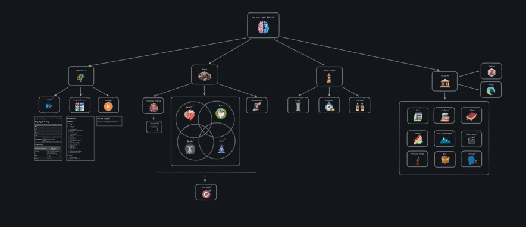

Giovanni's Diary > First Page >
My Public Diary
What you are witnessing here is my last iteration of my attempts to document my life. I have been doing this for some years, with different methods and ideas.
It all started during my last year of high school when I was in a period of great changes and open questions, I needed a way to clear my mind and express myself and my thoughts. So I took a notebook I had laying around and I started writing every now and then. As time passed, I kept doing it out of necessity and personal development: I would often look back at my previous writings to study them and see in which direction I was heading to. Furthermore, I enjoyed the idea of having a collection of data about all my life that felt personal. For many people this may be photos, but for me it is writing.
The more I wrote, the more complex and sophisticated my diaries became. At my fourth paper diary, I had developed a habit where each weekend I would revise my writings, divide them into paragraphs based on the subjects and the emotions, and summarize them in another "year diary". That was a lot of effort, I wanted to expand it and have something where I could link music, pictures, videos and query the contents quickly, and that required less maintenance.
Figure 1: My diaries
Here I started to investigate how to move my current analogical system to a digital one with Notion, I started some projects but were quickly abandoned because of my next discovery.
On my second year of university I started building my second brain with Obsidian. The idea was really cool: previously I was keeping a diary of my thoughts, but with the second brain project I was saving everything including links, youtube videos, research papers, etc… I enjoyed the idea of having everything locally and in markdown. I felt organized but looking back at it now I realize I wasn't. The amount of notes quickly became too big and my attempts to reorganize it never satisfied me. I researched very intricate and sophisticated over-engineered methods to partition the subjects but it didn't feel good anymore.

Figure 2: Main areas of the Second Brain
This was the time where I was trying out emacs, I remember I was spending days and nights compiling linux from scratch and I was using emacs as my window manager. I had such a minimal kernel configuration, I really felt ashamed that I was using an electron-based GUI program to take notes. It was natural that I would discover org mode and emacs lisp. So, I began rebuilding this blog from the foundations of the Obsidian's second brain, it will take some time to fill this with content but I feel like it will be worth It. I like how I can manage everything from emacs, I have written my elisp code to help me generate the html website, pdf books and rss notifications. I like that this is me trying to open and share something online, as a portfolio of some sort.
I still keep a private physical diary, I guess I went back to simpler times. The emacs diary is in continuous evolution and expansion, with some decent quality and organization without being too complicated, I feel like I have found a good balance, let's see where this will go next.
Travel: First Page